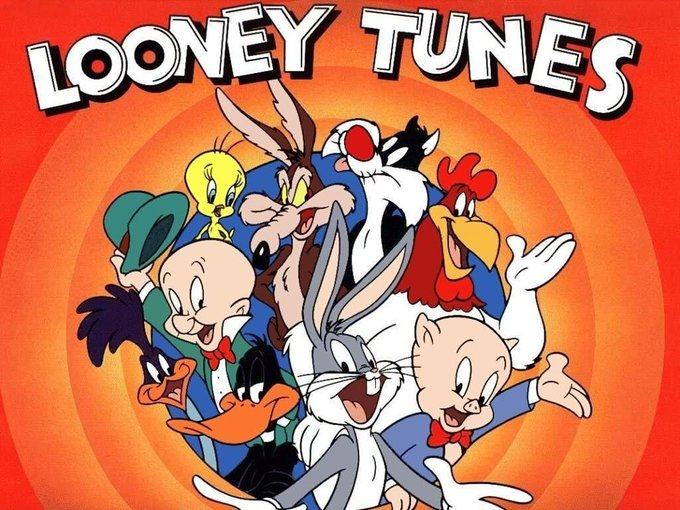

Los Hilos de Monik
Looney Tunes
Publicado el 1 de junio de 2020 - 8 tweets - Hilo original en Twitter
1
Cuando era niña mi horario sagrado eran las 6:30PM, el único momento del día en que se emitían, por media hora, dibujos animados.
En honor de mi infancia y la de los que fuimos niños en los 90, comparto los que fueron mis favoritos: los Looney Tunes.
2
Daffy Duck (Cuba: Pato Lucas)
Creación: 1937
Dato curioso: Durante la 2da Guerra Mundial, protagonizó algunos cortos anti-nazi. Llegó a ser la mascota de un escuadrón de bombarderos.
Lo que más me gustaba: Su mal carácter.
Escena favorita 👇
3
Bugs Bunny (Cuba: así mismo)
Creación: 1938
Dato curioso: Su nombre completo era George Washington Bunny
Lo que más me gustaba: su displicencia, sin importar la situación, siempre estaba relajado.
Escena favorita 👇
4
Porky Pig (Cuba: Porky, a secas)
Creación: 1935
Dato curioso: El actor que le daba voz, Joe Dougherty, era tartamudo
Lo que más me gustaba: su tartamudez porque de niña, yo también tartamudeaba.
Escena favorita 👇

5
Tweety & Sylvester (Cuba: Silvestre y Piolín)
Creación: Silvestre (1939) y Piolín (1941)
Dato curioso: Aunque su físico parece femenino, Piolín es de género cambiante.
Lo que más me gustaba: Silvestre al final terminaba siempre protegiendo a Piolín.
Escena favorita 👇

6
Foghorn Leghorn (Cuba: Gallo Claudio)
Creación: 1946
Dato curioso: Estuvo inspirado en el senador Claghorn, un popular personaje de radio, de quien tomó frases como "Oye, hijo!"
Lo que más me gustaba: Su acento (doblaje en español) que se le iban gallos
Escena favorita 👇

7
Wile E. Coyote & Road Runner (Cuba: Coyote y Correcaminos)
Creación: 1949
Dato curioso: en 2003 se explicó por qué todo era de Acme Co: el coyote era un empleado de pruebas con crédito ilimitado
Lo que más me gustaba: la expresión desquiciada del coyote.
Escena favorita 👇

7
Looney Tunes tiene otros personajes, pero esos eran mis favoritos.
Y cierro diciendo que casi todos estos personajes tuvieron en común a Mel Blanc, "El hombre de las mil voces"
Si alguien sabe quien hizo los doblajes de mi niñez, me encantaría saberlo.